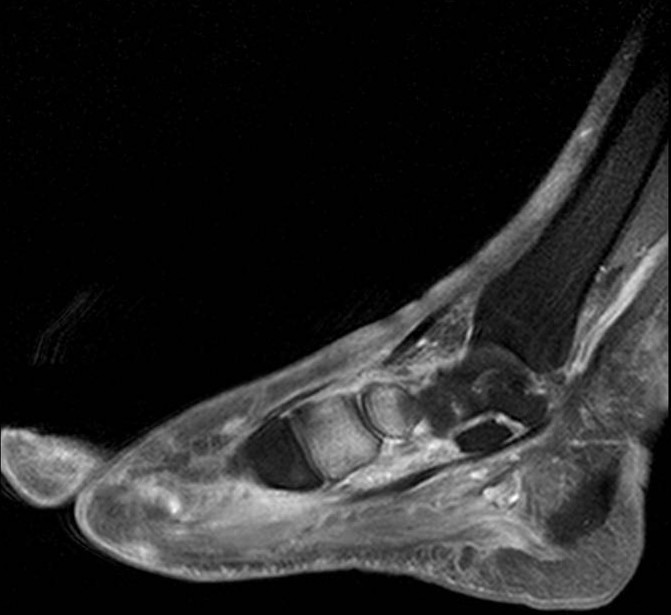

Ficha del catálogo
Artropatía neuropática del pie (pie de Charcot)
- Sistema
- Óseo
- Modalidad
- RM
- Región
- Pie
- Dificultad
- Avanzado
La artropatía neuropática aparece en articulaciones que han perdido la sensibilidad protectora y sufren microtraumatismos repetidos sin dolor que los limite. En nuestro medio la causa dominante es la diabetes de larga evolución y la localización más común es el mediopié. El proceso comienza con una fase aguda de inflamación y edema óseo y evoluciona hacia desestructuración, fragmentación y colapso del arco plantar. El gran problema práctico es diferenciarla de la osteomielitis en un pie diabético con úlcera.
Técnica
Resonancia con secuencias potenciadas en T1, secuencias sensibles al líquido con supresión grasa y estudio tras contraste, en planos axial, sagital y coronal del pie.
Qué observar
- Edema medular extenso en varios huesos alrededor de una articulación
- Desestructuración y fragmentación de las articulaciones del mediopié
- Colapso del arco longitudinal con desplazamiento plantar de los huesos del tarso
- Quistes subcondrales, esclerosis y detritos intraarticulares
- Presencia o ausencia de úlcera cutánea y de trayecto fistuloso hacia el hueso
- Colecciones con realce periférico que indicarían absceso sobreañadido
Hallazgos
Desestructuración articular del mediopié con fragmentación ósea, subluxación y edema medular periarticular en varios huesos, con o sin signos de infección asociada.
Perlas
Cuando la afectación se centra en el mediopié, respeta la piel y compromete varios huesos alrededor de una articulación, lo probable es artropatía neuropática. La osteomielitis del pie diabético tiende a asentar bajo una úlcera, en zonas de presión como las cabezas metatarsianas o el calcáneo, y sustituye la señal grasa normal de la médula en las secuencias potenciadas en T1.
Diagnóstico diferencial
- Osteomielitis del pie diabético
- Úlcera suprayacente, trayecto fistuloso y pérdida focal de la señal grasa medular.
- Artritis séptica
- Derrame con realce sinovial intenso y afectación de una sola articulación.
- Artrosis avanzada del mediopié
- Osteofitos y pinzamiento sin fragmentación ni luxación importante.
Simuladores
- Edema óseo por sobrecarga en pies con deformidad
- Fractura por insuficiencia del tarso
- Cambios postquirúrgicos de artrodesis previas
Por modalidad
- RX
- Muestra la desestructuración y sirve de referencia evolutiva
- RM
- Método de elección para diferenciar de la osteomielitis y detectar abscesos
- TC
- Detalla la fragmentación ósea y ayuda a planificar la cirugía
Protocolo
Resonancia de pie con secuencias sensibles al líquido y estudio tras contraste. Radiografía comparativa previa y de seguimiento para valorar la progresión de la deformidad.
Clasificación
Se describen una fase aguda inflamatoria, una fase de fragmentación y coalescencia y una fase final de remodelación con deformidad establecida.
Errores frecuentes
- Diagnosticar osteomielitis por el simple hallazgo de edema óseo
- No valorar la piel ni buscar el trayecto fistuloso en el estudio
- Olvidar comparar con radiografías previas para juzgar la evolución

pie diabetico artropatia neuropatica charcot mediopie edema medular osteomielitis resonancia